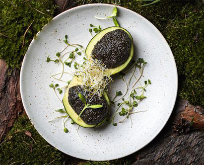

чорна ікра з чіа
Листи норі перемолоти, змішати з соусом та рослинним маслом. Залити зерна та залишити на пів години. Чудово смакує з грінками з темного хліба змащених авокадо.
- насіння ЧІА (3ст. л.)
- лист норі (2 шт.)
- соєвий соус (3ст. л.)
- лляне масло (2ст. л.)